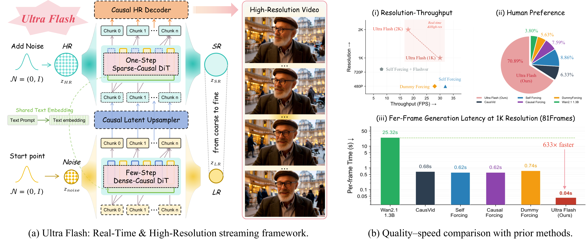
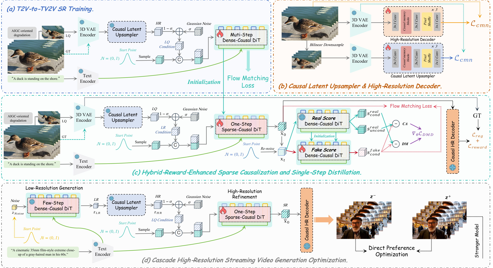

1 JD Explore Academy 2 University of Science and Technology of China (USTC) 3 Peking University
Background: 2K video generated in real-time by Ultra Flash
Ultra Flash is the first framework to achieve real-time high-resolution streaming video generation — producing 1K video at ~30 FPS and 2K video at ~18 FPS on a single GPU through cascaded causal streaming architecture.
While recent autoregressive video diffusion models achieve remarkable streaming quality, they remain confined to low resolutions (e.g., 480P), leaving efficient, scalable, real-time high-resolution video generation a fundamental open challenge. To bridge this gap, we present Ultra Flash, a cascaded streaming framework capable of real-time high-resolution video generation. Ultra Flash achieves ~30 FPS at 1K resolution and ~18 FPS at 2K resolution on a single GPU through three key contributions: (1) an architecture-preserving T2V-to-TV2V super-resolution training paradigm coupled with an AIGC-oriented data degradation pipeline that effectively preserves the generative capability of the base model; (2) a causal streaming latent upsampler paired with a high-resolution decoder, which enhances spatiotemporal coherence while enabling efficient latent spatial scaling; and (3) a cascade high-resolution streaming video generation optimization scheme that performs hybrid-reward-enhanced sparse causalization and single-step distillation, then introduces cascaded streaming self-forcing preference optimization with dynamic cache management, jointly enhancing overall coherence, improving quality, and enabling real-time streaming.

(a) Ultra Flash: Real-Time & High-Resolution streaming framework. (b) Quality–speed comparison with prior methods.
Three core innovations that enable real-time high-resolution streaming video generation.
Architecture-preserving paradigm that converts any pre-trained T2V model into a generative super-resolution model without modification, with AIGC-oriented degradation.
Ultralight causal memory network (~2M params) that upsamples latents with spatiotemporal coherence, adding <5% pipeline overhead.
Hybrid-reward sparse distillation + cascaded DPO preference optimization + dynamic cache management for real-time inference.

(a) T2V-to-TV2V SR Training. (b) Causal Latent Upsampler & High-Resolution Decoder. (c) Hybrid-Reward-Enhanced Sparse Causalization and Single-Step Distillation. (d) Cascade High-Resolution Streaming Video Generation Optimization.
Efficiency Comparison
| Method | Resolution | Steps | Throughput (FPS) ↑ | Latency (ms) ↓ |
|---|---|---|---|---|
| CausVid | 480×832 | 4 | 24.4 | 123 |
| Self Forcing | 480×832 | 4 | 32.0 | 125 |
| Causal Forcing | 480×832 | 4 | 31.2 | 128 |
| DummyForcing | 480×832 | 4 | 28.0 | 143 |
| Self Forcing + FlashVSR | 768×1408 | 5 | 8.0 | 500 |
| Ultra Flash (Ours) | 960×1664 (1K) | 4 | 30.0 | 40 |
| Ultra Flash (Ours) | 1440×2496 (2K) | 4 | 18.0 | 67 |
Real-time 2K streaming video generation results. Hover to see the text prompt.
@inproceedings{luxury2026ultraflash,
title={Ultra Flash: Scaling Real-Time Streaming Video Generation to High Resolutions},
author={Luxury and Huang, Jie and Fan, Zihao and Ma, Xiaoxiao and Li, Yuming and Fu, Siming and Zhuang, Jun-hao and Xue, Zeyue and Li, Haoran and Huang, Haoyang and Duan, Nan},
booktitle={Arxiv},
year={2026}
}